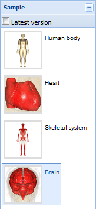
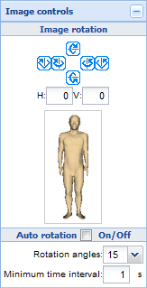
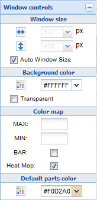
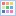

Anatomographyタブのレフトパネルは下記の3つの要素から構成されています。
- Sample

各種サンプルをメインパネルに表示します。
Latest versionにチェックを入れると、サンプル作成時のバージョンに関係なく、最新バージョンでサンプルを開きます。
- Image controls

主に画像の回転に関連するコントロールです。
- Image rotation
- ボタン：中心点の周りを画像上の上方向に向かって視線が15°回転するようにカメラを移動します。
- ボタン：中心点の周りを画像上の左方向に向かって視線が90°回転するようにカメラを移動します。
- ボタン：中心点の周りを画像上の左方向に向かって視線が15°回転するようにカメラを移動します。
- ボタン：中心点の周りを画像上の右方向に向かって視線が15°回転するようにカメラを移動します。
- ボタン：中心点の周りを画像上の右方向に向かって視線が90°回転するようにカメラを移動します。
- ボタン：中心点の周りを画像上の下方向に向かって視線が15°回転するようにカメラを移動します。
- H：画像の正面からの水平方向の回転角度を指定します。
- H：画像の正面からの垂直方向の回転角度を指定します。
- Auto rotation
- On/Off：チェックを入れておくと画像を指定単位時間当たり、指定角度回転します。
- Rotation angles：単位時間当たりの回転角度を指定します。
- Minimum time interval：回転の単位時間を秒数で指定します。
- Window controls

画像サイズ、背景色、カラーマップ設定、パーツ色等に関する指定をします。
- Window size
- ボタン：画像幅ピクセル数を指定します。
- ボタン：画像高さピクセル数を指定します。
- Auto Window Size：ウィンドウサイズに合わせて画像サイズを自動指定します。
- Background color
- ：背景色を指定します。
- Transparent：チェックをすると背景が透過になります。
- Color map
- MAX：Heat Mapの最大値を指定します。
- MIN：Heat Mapの最小値を指定します。
- BAR：Heat Mapの色見本バーを表示します。
- Heat Map：各パーツのValueを描画色に反映させます。
- Default parts color